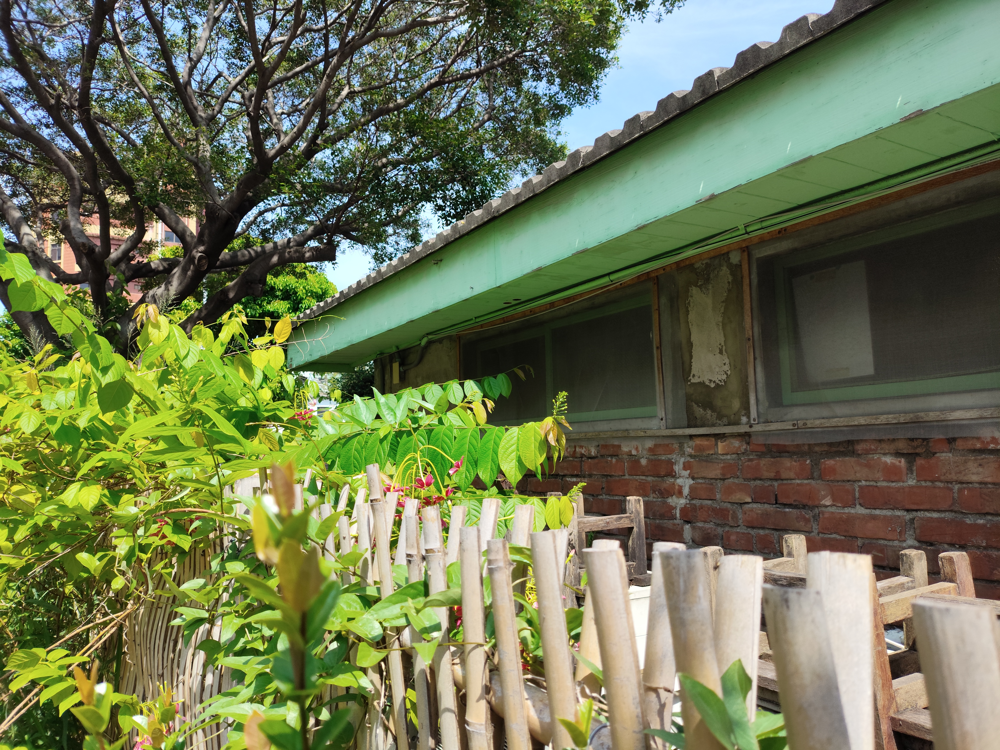
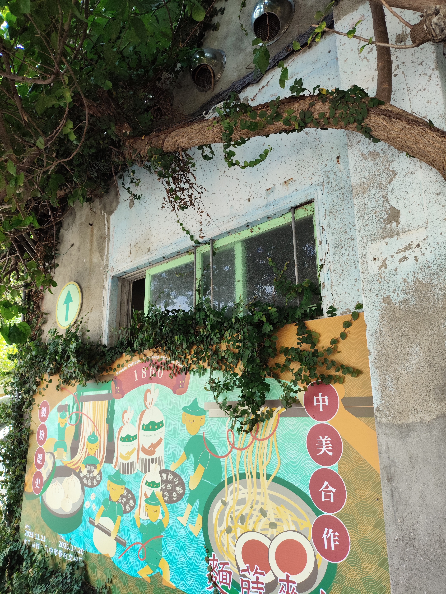
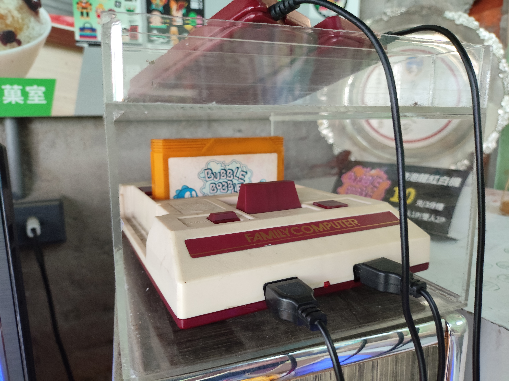
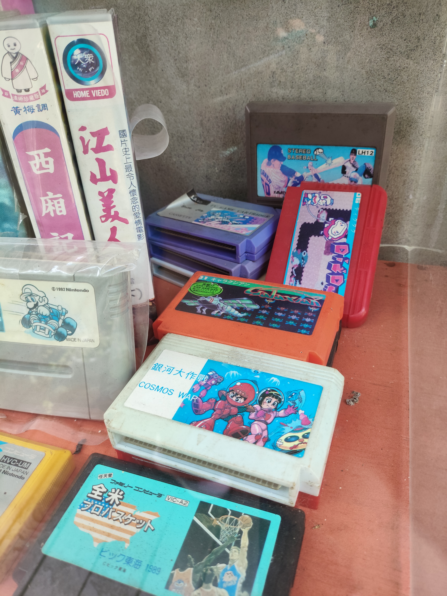
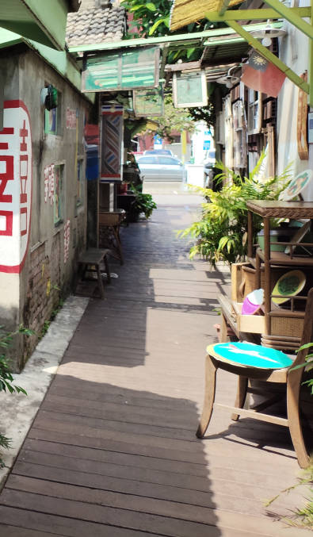
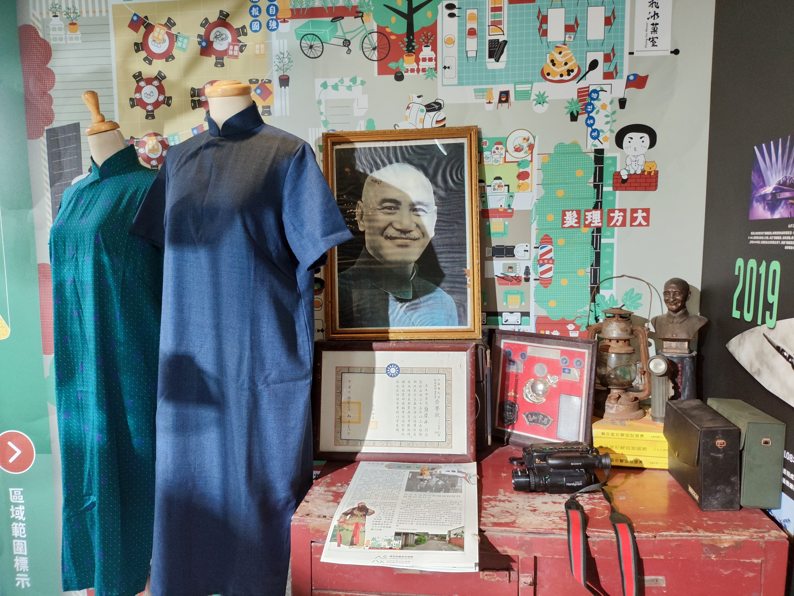

走進北屯新村，像是翻開一頁泛黃的年鑑。竹籬笆、老房與參天大樹，是記憶中眷村最鮮明的模樣。巷子兩旁低矮的房子掛著國旗，水泥牆上的圖案帶著時代的氣息。

走進室內，看見任天堂紅白機與卡帶，那曾是兒時最思思念念的寶貝。老照片、老文物靜靜陳列，空氣中彷彿還留著眷村特有的生活氣息，讓人不自覺地放慢腳步。





PLACE NOTE / 眷村文物館
臺中市眷村文物館（原北屯新村）建於 1960 年，原為安置空軍技術人員的宿舍。園區保存了三棟老眷舍，現在轉型為文物展館、柑仔店與餐廳。這裡不定期舉辦文創市集，是體驗早期眷村文化與生活美學的好去處。
延伸探索
文章與照片為本次參觀的個人記錄；開放時間與活動資訊請以官方最新公告為準。